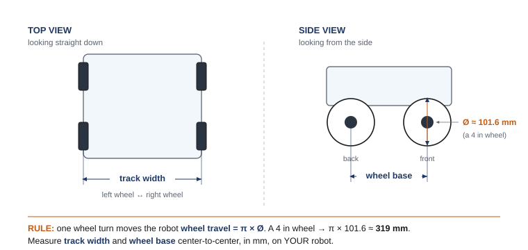

Driver control: now you're the loop
Think about the two ways a competition robot moves. For part of a match it runs autonomously — the program you wrote in Chapter 11 reads sensors, decides with if, and drives the motors, all by itself. For the rest of the match a person picks up a controller and drives it. That second mode is driver control (also called teleoperation, or "teleop"): the robot does exactly what the human tells it to, moment to moment.
Here's the neat part — it's the same loop you already know. Chapter 11's robot ran a while (true) loop that went sense → decide → act. Driver control runs the very same loop, but you are the "decide." Instead of reading a distance sensor, the program reads the controller; instead of an if choosing the action, your thumbs choose it. Your eyes watch the robot and your hands react — so you close the feedback loop.
Watch first: from sticks to motors
This two-minute video covers the whole chapter in one pass — the driver-control loop, the controller's axes and buttons, position(), tank drive, the dead zone, buttons for an arm (with setStopping(hold)), and arcade drive.
Meet the controller
The VEX controller is a gamepad with two joysticks and a set of buttons. But before it can drive anything, two quick setup steps.
First: charge it and pair it
- Charge it. The controller has its own battery; charge it through its USB port until the charge light reads full. Charge the Brain's battery too — a low battery is a common reason a robot turns sluggish or quits mid-run.
- Pair it to the Brain. The EXP controller talks to the Brain wirelessly. Turn on the Brain (Check button) and the controller (its Power button), then on the Brain's screen go to Settings → Link and follow the prompt. When they connect, the Brain's light and the controller's Power/Link light both blink green — and they stay paired after that, even through a power cycle, so you only do this once.
Once it's paired, the controller is a device you name once in your code, just like a motor:
● Naming the controller and your motors
controller Controller = controller(); // the EXP controller motor leftMotor = motor(PORT1); // left side of the drive motor rightMotor = motor(PORT6, true); // right side (reversed — mirror-mounted) motor armMotor = motor(PORT3); // the lift / claw mechanism
Those two drive motors are the same leftMotor and rightMotor you set up back in the Survival Challenge (Chapter 7) — one on each side, the right one reversed because it faces the opposite way. Now the controller tells them what to do.
Each joystick moves on two axes — up/down and left/right — and the controller reports each axis separately, numbered Axis1 through Axis4. The buttons report whether they're being pressed. Here's the whole layout:
Driving: a stick for each side
Ask an axis for its reading with .position(). It hands back a whole number from −100 to 100: push the stick all the way up and you get 100, pull it all the way down and you get −100, leave it centered and you get 0. That number is a percent — which is exactly what a motor's setVelocity wants. So you can feed a stick's reading straight to a motor's speed:
● Tank drive — left stick runs the left side, right stick the right
int main() { vexcodeInit(); while (true) { // the driver-control loop // each stick runs one side (Axis3 = left, Axis2 = right): leftMotor.setVelocity(Controller.Axis3.position(), percent); rightMotor.setVelocity(Controller.Axis2.position(), percent); leftMotor.spin(forward); rightMotor.spin(forward); wait(20, msec); // pause, then read again } }
This is tank drive: each stick controls one side of the robot, like the levers on a tank or a bulldozer. Push both sticks up and the robot drives straight forward; pull both down and it backs up; push one and pull the other and it spins in place. You never told it to go in reverse — but watch what happens when you pull a stick down: position() returns a negative number, and a negative velocity with spin(forward) simply runs the motor backward. One stick gives you full speed in both directions.
🎯 Why the speed never "sticks" at one value
Notice there's no single number for the motor speed — every trip around the loop it's read fresh from the stick. That's what makes driving feel live: the moment your thumb moves, the next loop reads the new position and the motor follows. That tiny wait(20, msec) at the bottom sets how often it re-reads — about 50 times a second, smooth enough that you can't feel the steps.
The dead zone
Real joysticks don't sit at a perfect 0 when you let go — they rest at 2, or −3, some tiny number. Send that straight to the motors and your robot creeps and hums even when no one's touching it. The fix is a dead zone: ignore any reading close to the center, and only drive when the stick has really moved.
● A dead zone for one motor
int p = Controller.Axis3.position(); // read the left stick once if (p > 5 || p < -5) { // outside the dead zone? leftMotor.setVelocity(p, percent); leftMotor.spin(forward); } else { leftMotor.stop(); // tiny wobble -> hold still }
Read the stick into a variable p so you only ask once, then check it: if it's bigger than 5 or smaller than −5 the driver means it, so drive; otherwise the motor holds still. Five is just a starting point — if your robot still twitches, widen the dead zone to 10.
Another way to steer: arcade drive
Tank drive isn't the only layout. In arcade drive one stick says go (forward or back) and the other says steer (left or right) — like a video-game car. The program mixes the two readings: add the turn to one side and subtract it from the other.
● Arcade drive — left stick goes, right stick steers
int fwd = Controller.Axis3.position(); // left stick up/down: go int turn = Controller.Axis1.position(); // right stick left/right: steer leftMotor.setVelocity(fwd + turn, percent); rightMotor.setVelocity(fwd - turn, percent); leftMotor.spin(forward); rightMotor.spin(forward);
| Sticks | fwd | turn | Left = fwd + turn | Right = fwd − turn | Robot |
|---|---|---|---|---|---|
| Left stick up | 80 | 0 | 80 | 80 | drives straight |
| Up + right a little | 80 | 20 | 100 | 60 | curves right |
| Right stick only, right | 0 | 50 | 50 | −50 | spins right in place |
If fwd + turn goes over 100, the motor just runs at full speed. Try both layouts in the animation below and let your drivers pick.
Buttons: run a mechanism
Sticks are great for driving, but a lift or a claw usually just needs to go up or down — that's a job for a button. A button is even simpler than an axis: ask it .pressing() and you get back true (held down) or false (not). Use two buttons to run a mechanism both ways:
● R1 raises the arm, R2 lowers it
if (Controller.ButtonR1.pressing()) { // R1 held -> raise armMotor.spin(forward); } else if (Controller.ButtonR2.pressing()) { // R2 held -> lower armMotor.spin(reverse); } else { armMotor.stop(); // nothing held -> stop }
It's the same if / else if / else you used for autonomous decisions in Chapter 11 — only now the "condition" is is the driver pressing this button? instead of is something close? The final else matters: without it, the arm would keep spinning after you let go. And to make the arm stay up under a load when it stops, set armMotor.setStopping(hold); once before the loop — the same command your Chapter 11 gate used.
Put it together: the driver-control loop
Everything lives inside one while (true) loop — read the sticks, drive the wheels, check the buttons, run the arm, then a short wait and around again. That single loop is your driver-control program:
● A complete remote-controlled robot — tank drive + a button-controlled arm
int main() { vexcodeInit(); armMotor.setStopping(hold); // arm holds its height when stopped while (true) { // --- drive: each stick runs one side --- leftMotor.setVelocity(Controller.Axis3.position(), percent); rightMotor.setVelocity(Controller.Axis2.position(), percent); leftMotor.spin(forward); rightMotor.spin(forward); // --- arm: R1 raises, R2 lowers --- if (Controller.ButtonR1.pressing()) { armMotor.spin(forward); } else if (Controller.ButtonR2.pressing()) { armMotor.spin(reverse); } else { armMotor.stop(); } wait(20, msec); } }
That's the whole shape of teleop: a forever loop that keeps reading the controller and keeps moving the robot to match. Add a dead zone to the drive lines, swap ButtonR1 for another button, or point the arm code at a second motor, and you can drive anything you build.
Try it: drive a robot from this page
These sliders are your joysticks. Drag them (or use the keyboard: W / S for the left stick, I / K for the right) and watch the robot and the code. The numbers in the code are what position() reads right now. Let go of a stick and it springs back — but, like a real joystick, not quite to 0. Watch what that does to the robot, then turn on the dead zone. Hold R1 or R2 to move the arm.
Push both sticks up to drive forward. Push one up and pull the other down to spin.
One more step: drive the whole base as one thing
Tank-driving each side by hand is perfect for a driver. But for the precise, run-by-itself moves your Sumo robot will need next chapter — "drive forward exactly 24 inches," "turn to face 90°" — there's a cleaner tool: a smart drivetrain. Instead of feeding each motor a stick reading, you bundle the wheels into one object and give it distances and headings. And because the EXP Brain has a built-in inertial sensor, that drivetrain can turn to an exact angle by feel — not by guessing at a timer.
This is the abstraction idea from Chapter 9, one rung higher. Back then you bundled steps under a name on paper; in Chapter 12 you did it in code — a function like runProcess() bundles a group of steps under a name you call. A smart drivetrain is the next rung: an object. An object bundles things together — your two motors and the inertial sensor — and the verbs that act on them (driveFor, turnToHeading) under one name. That's why you'll write Drivetrain.driveFor(...) instead of commanding each motor by hand: the Drivetrain object owns the parts and knows the moves, so you talk to it in bigger steps.
🧩 Function vs. object — two sizes of bundle
A function bundles steps under a name (Chapter 12): say the name, the steps run. An object bundles things plus the verbs that act on them under a name — motor_group bundles motors; smartdrive bundles two groups, a sensor, and the moves you can ask for. Both are abstraction, decomposition's partner from Chapter 9: wrap the small stuff under one name you can trust, then think in bigger steps.
Three short steps build it: bundle each side into a motor_group, name the Brain's built-in inertial, then combine them into a smartdrive.
● Setup — once, near the top with your other devices
// bundle each side: one motor now, but a group is how you'd drive 2-3 later motor_group leftSide = motor_group(leftMotor); motor_group rightSide = motor_group(rightMotor); // the EXP Brain's built-in inertial -- the empty () means "the one inside the Brain" inertial DriveIMU = inertial(); // one object that drives the whole base and knows its heading // (wheel travel, track width, wheel base -- set these for YOUR robot) smartdrive Drivetrain = smartdrive(leftSide, rightSide, DriveIMU, 319.19, 250, 200, mm, 1);
Where those three numbers come from
The values 319.19, 250, 200 aren't magic — they describe your robot, and the drivetrain needs them to turn a distance or an angle into wheel turns. Measure them once:

- Wheel travel — how far the robot rolls in one full wheel turn, which is the wheel's circumference: π × Ø. The kit's 4 in wheel (Ø 101.6 mm) gives π × 101.6 ≈ 319 mm — that's the 319.19 in the code.
- Track width — the distance between the left and right wheels, measured center to center, in mm. The 250 is just an example; measure yours.
- Wheel base — the distance between the front and back wheels, center to center, in mm. The 200 is an example too.
They go into smartdrive(...) in that order, after the two groups and the sensor: …, wheelTravel, trackWidth, wheelBase, mm, gearRatio. The final 1 is the gear ratio between motor and wheel — 1 when the motor drives the wheel directly, which is most kit bases. The numbers matter: a wrong wheel travel makes every driveFor distance come out short or long.
An inertial sensor has to find "level" before it can measure a turn, so calibrate it once at the very start of main() and wait for it to finish — like letting a compass settle before you trust it. (VEXcode adds this step for you behind the scenes; when you write the code yourself, you add it yourself.)
● Calibrate first — at the top of main(), before you drive
int main() { vexcodeInit(); DriveIMU.calibrate(); // find level -- hold still! while (DriveIMU.isCalibrating()) wait(50, msec); // wait until it's ready // now the base drives by distance and turns by heading: Drivetrain.driveFor(forward, 24, inches); // roll exactly 24 inches Drivetrain.turnToHeading(90, degrees); // turn to face 90 degrees }
Two new commands do the work: driveFor rolls a measured distance, and turnToHeading turns until the inertial reads the heading you asked for. It's the same pair of skills from your Chapter 11 autonomous routine — only now the robot measures the turn itself instead of you timing it. You'll lean on both to build the Sumo auto-hunt in the next chapter.
🏆 This is the team's "drive" object, early
That one Drivetrain you command by distance and heading is exactly the idea behind the V5 team's SpartanDrive drive object. driveFor(forward, 24, inches) becomes drive.drive_distance(24); turnToHeading(90, degrees) becomes drive.turn_to_angle(90) — turning to that absolute heading. Same move, new name; the full map is in Appendix B: EXP → V5 Team Bridge.
📐 Build constraints (still in force)
- Build your robot from the classroom PLTW Gateway kit only. The kit's bundled motors and controller are fair game; the separate competition team's V5 parts are off-limits.
- The whole robot must still fit one IKEA Kallax cubby — a 33 × 33 cm (13 × 13 in) opening, about 38 cm (15 in) deep. The 33 × 33 face is the limit, so design your drive base and lift to pack into that square.
🧵 Keep your wiring tidy
A driving robot with a moving arm is exactly where a loose cable gets snagged or yanked out mid-run. Three habits prevent it: seat every cable fully (feel the Smart Cable click); route wires along the structure and away from joints, gears, and wheels so nothing pinches or catches them; and secure the slack with a twist tie, leaving just enough give for parts that move. Tidy wiring isn't about looks — a popped cable looks exactly like a code bug, and you'll waste your time chasing the wrong thing.
🏆 Also on the V5 competition team?
The full command-by-command map is in Appendix B: EXP → V5 Team Bridge.
This is the driver-control period of a real match. On V5 you wrap this exact code in a drivercontrol function and register it with the competition object, so the field switches your robot between the autonomous routine (Chapter 11) and driver control automatically. The controller code is identical — same Axis3.position(), same ButtonR1.pressing(). The V5 controller adds a few buttons (Left/Right arrows, X and Y) the EXP doesn't have; browse them in the V5 Controller C++ API.
📚 Learn more — VEX Library & C++ API
- Controller Axis — VEX EXP C++ API — the four axes and position(), the joystick reading at the center of driving.
- Controller Button — VEX EXP C++ API — pressing() and the full button set on the EXP controller.
- Motor and Motor Group — VEX EXP C++ API — setVelocity and spin, the commands the controller feeds.
- Using the Controller with VEX EXP — pairing, charging, and the controller screen.
⚠️ Safety
- A driven robot moves the instant you touch a stick. Give it room to move and keep hands, hair, and cables clear of wheels, arms, and gears.
- Unplug the USB-C cable before you drive, and drive on the floor or a clear table where the robot can't fall.
- Drive at a speed you can control — start slow, and be ready to drop the sticks to stop.
- Power the Brain down with the X button when you're done, and store the robot in its cubby.
The project: build a robot you can drive
Now put it to work. Your team will design, build, and program a remote-controlled robot — a drive base you steer with the sticks, plus at least one mechanism you run with the buttons. A classic challenge is a forklift: tank-drive wheels to get around, and a button-raised fork to pick up and stack a load. Pick that, or propose your own:
- Forklift — drive up to a block, raise the fork (R1) to lift it, drive it somewhere, lower it (R2) to stack.
- Claw bot — drive around and open/close a gripper with two buttons to grab and carry objects.
- Plow or pusher — a fast, sturdy drive base that shoves objects into a goal zone.
- Arm bot — a driveable base with a swinging arm that knocks down or sorts targets.
Work as a small team with shared jobs — someone leading the build, someone the wiring, someone the code — and rotate so everyone does each. Use the design process you've practiced all year: understand the task and its constraints, sketch a couple of ideas, pick the best, build it, then test and improve. And remember the big question underneath this chapter: a driver makes the robot flexible, but a human has to be there — when would you rather it ran itself?
Code tutorial: build your driver-control program, one step at a time
Build the remote-control program in small pieces and test after every step. For every driving test: unplug the USB-C cable, start the program from the Brain, and keep the robot on the floor with room to move. Lines shaded blue are new.
Goal: see what the stick really reports
Name the controller and print a stick
Pair the controller first (Settings → Link on the Brain). Then show the left stick's reading on the Brain's screen, so you can see the numbers before they drive anything.
controller Controller = controller(); int main() { vexcodeInit(); while (true) { Brain.Screen.clearScreen(); Brain.Screen.setCursor(1, 1); Brain.Screen.print("Axis3: %d", Controller.Axis3.position()); wait(100, msec); } }
✅ Check it: push the left stick fully up (about 100), fully down (about −100), then let go. Write down the number it rests at — it's often not exactly 0. You'll need that in step 4.
🔧 If not: the number never changes? The controller isn't paired — redo Settings → Link and look for the green blinking lights on both.
Goal: one stick drives one side
One stick, one motor
Feed the left stick straight into the left motor's speed. Test this one side before you add the other.
controller Controller = controller(); motor leftMotor = motor(PORT1); int main() { vexcodeInit(); while (true) { leftMotor.setVelocity(Controller.Axis3.position(), percent); leftMotor.spin(forward); wait(20, msec); } }
✅ Check it: with the wheels off the table, push the left stick up a little, then a lot. The wheel speeds up as you push further. Pull down and it runs backward.
Goal: tank drive on the floor
Add the right side
Add the right motor — reversed, because it faces the other way — and feed it the right stick.
controller Controller = controller(); motor leftMotor = motor(PORT1); motor rightMotor = motor(PORT6, true); // mirror-mounted int main() { vexcodeInit(); while (true) { leftMotor.setVelocity(Controller.Axis3.position(), percent); rightMotor.setVelocity(Controller.Axis2.position(), percent); leftMotor.spin(forward); rightMotor.spin(forward); wait(20, msec); } }
✅ Check it: both sticks up → straight forward. Both down → straight back. Left up, right down → spins right.
🔧 If not: one side runs backward? Move true to the other motor (or remove it). The robot drives "backward" when you push up? Remove true from the right and add it to the left.
Goal: the robot sits still when you let go
Add a dead zone with a function
Both sides need a dead zone, so write it once as a function (Chapter 12) and use it twice. deadband takes a stick reading and hands back 0 if it's close to the center — otherwise the reading unchanged. Use the resting number from step 1 to pick the size.
int deadband(int value) { if (value > -5 && value < 5) { // close to center? return 0; // treat it as zero } return value; // the driver means it } int main() { vexcodeInit(); while (true) { int left = deadband(Controller.Axis3.position()); int right = deadband(Controller.Axis2.position()); leftMotor.setVelocity(left, percent); rightMotor.setVelocity(right, percent); leftMotor.spin(forward); rightMotor.spin(forward); wait(20, msec); } }
This function is new in one way: it returns a value. The int in front of its name says "this function hands back a whole number," and return is how it hands it back.
✅ Check it: let go of both sticks. The robot sits completely still and quiet — no creep, no hum.
🔧 If not: still creeping? Your sticks rest farther from 0 — widen it to -10 and 10.
Goal: buttons run the mechanism, and it holds
Add the arm on R1 / R2
Add the arm motor and the button decision inside the same loop. setStopping(hold) makes the arm stay where you left it instead of sagging under its load.
motor armMotor = motor(PORT3); ... int main() { vexcodeInit(); armMotor.setStopping(hold); // keep the load up while (true) { // ...the drive lines from step 4... if (Controller.ButtonR1.pressing()) { armMotor.spin(forward); } else if (Controller.ButtonR2.pressing()) { armMotor.spin(reverse); } else { armMotor.stop(); } wait(20, msec); } }
✅ Check it: R1 raises, R2 lowers, nothing held → the arm stops and holds. Lift a load, let go, and the arm shouldn't droop. You can still drive while the arm moves.
🔧 If not: R1 lowers? Swap forward and reverse. Arm keeps going after you let go? Check the final else is there.
Goal: easier to drive precisely
Add a slow "precision mode"
Lining up a fork under a block is hard at full speed. Use a variable as a speed multiplier: full speed normally, half speed while L1 is held.
while (true) { double scale = 1.0; // full speed if (Controller.ButtonL1.pressing()) { scale = 0.5; // precision: half } int left = deadband(Controller.Axis3.position()); int right = deadband(Controller.Axis2.position()); leftMotor.setVelocity(left * scale, percent); rightMotor.setVelocity(right * scale, percent); // ...spin, arm, wait... }
✅ Check it: drive a lap normally, then hold L1 and drive the same lap. Fill in your controls map: which stick does what, which button does what — and give it to a teammate to try.
What you'll need
- Your computer with VS Code + the VEX extension, and a USB-C cable
- The PLTW Gateway EXP kit: Brain, charged battery, the controller, two drive motors, and a motor for your mechanism
- Your engineering notebook for sketches, pseudocode, and a daily journal
- The project worksheet (design brief, controls map, and reflection)
Do it
- Define the problem. Read your task, then write a short design brief: what the robot must do, and every constraint (EXP kit only, fits the cubby, which mechanism).
- Sketch and choose. Each teammate sketches a design. Compare them against your criteria and pick the best one to build.
- Build the robot. Construct a sturdy tank-drive base and your mechanism from the kit so the whole thing fits the cubby. Mount both drive motors and the mechanism motor, and wire them to the Brain.
- Map your controls, then code. Decide which stick drives which side and which button does what — write it down first. Then build it in C++ by following the code tutorial: print a stick, drive one side, then both, add the dead zone, the arm buttons, and a precision mode.
- Test and refine — a little at a time. Download, unplug, and drive. Fix one thing at a time: add a dead zone if it creeps, widen it if it still twitches, flip a motor if a side goes the wrong way.
- Evaluate. In your notebook, judge how well it drives — and answer: which was harder, driving or automating, and which jobs would you hand back to the robot?
Check your understanding
- What is driver control (teleoperation), and how is it different from the autonomous program you wrote in Chapter 11?
- What does Controller.Axis3.position() give you? What number comes back when the stick is pushed fully up, fully down, and centered?
- Explain tank drive. Which axis runs the left side, which runs the right, and how does the robot turn?
- What is a dead zone, and why does a driver-control program need one?
- What does .pressing() return? Write the if / else if / else that raises a fork while R1 is held, lowers it while R2 is held, and holds it still otherwise.
- In arcade drive, the left stick reads 60 and the right stick's left/right axis reads 30. What speed does each side get, and which way does the robot curve?
- The deadband function in the tutorial returns a value. What does it return for a reading of 3? For -40? Why write it as a function instead of two copies of the if?
- Driver control and autonomous each have strengths. Give one task you'd rather drive by hand and one you'd rather let the robot do automatically, and say why.
- Your controller won't drive the robot. Walk through how you'd get it working: how do you pair an EXP controller to the Brain, how can you tell they're connected, and what's one battery-related reason a robot goes sluggish mid-run?
Key terms
Sources (PLTW Gateway Automation & Robotics, Project 4.1 "Remote Controls"; VEX Library, kb.vex.com; VEXcode EXP C++ API, api.vex.com): the project (build and program a remote-controlled robot — a forklift or similar — driven with joysticks and buttons) and its conclusion questions (driver control vs. autonomous; what would you automate?) are from the PLTW Gateway curriculum, modernized here from the legacy Cortex/ROBOTC tool to VEX C++ in VS Code on the EXP Brain. The Controller API is verified against the VEX Library: the controller object, the four axes and position() (a whole number, −100 to 100), and the buttons' pressing() (a true/false reading) — a negative axis value with spin(forward) runs a motor in reverse. Tank drive maps the left stick (Axis3) to leftMotor and the right stick (Axis2) to rightMotor. The if / else if / else and while (true) loop are standard C++ carried from Chapter 11; the motor commands and the leftMotor / rightMotor setup from Chapter 7. The drive-it-yourself animation, arcade-drive mixing table, narrated walkthrough video, and step-by-step code tutorial (including the deadband function, setStopping(hold) for the arm, and the L1 precision mode) are added scaffolding for this edition. Charging the controller and Brain battery and wirelessly pairing the controller to the Brain (Settings → Link, both lights blinking green, pairing retained across power cycles) are verified against the VEX Library (Using the Controller with VEX EXP; Wirelessly Pairing an EXP Controller to an EXP Brain; Charging the EXP Controller / Battery).